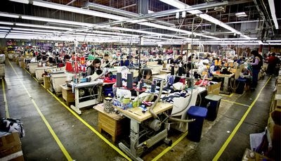
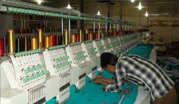
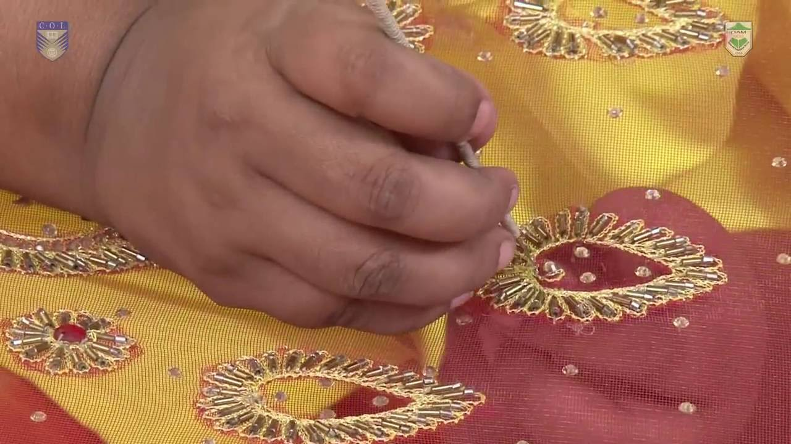

Buying House/Trading Unit:
It has been started since 2018, when we feel need support to our other units then we established this buying unit. We are handling below things under this roof…
See more..Manufacturing Unit
It has started 2017, we are handling here local market order and global market orders. -Local market clients are: - Aarong, Umbrella, Milan, Klubhue, Grameen UNIQLO etc.
See more..

Embroidery Unit
This unit has started since 2010. We can do all types of embroidery like as, Flat stitch, Sequins, Puff & 3D embroidery, Pearl & beads attached, Chenille, Tapping, Cording, Shellie, two way sequins with sublimation prints & applique attached etc.
See more..Printing Unit
This unit has been started since 2015. We have a very good and well equipped printing unit we can do all types of printing like as, Cotton Digital printing, Sublimation printing, Screen printing (Printing types:-Screen , HD, Silicon, 3D print, Rubber, Semi rubber, Pigment, Photo print, Discharge , Polyester sublimation , In cotton fabric cotton digital etc.
See more..

Hand Work Unit
It has been started since 2016, where all worker working in manual. Basically we are doing here fancy and critical karchupi work. This unit all worker are very high skill and experienced. We are supporting very lower class people through manual work, medical facility, and very clean & on time payment. We do here social work through education, training, medication, awareness for betterment of our worker life.
See more..Accessorires Unit
It has been started since 2017, basically we can do here all type of twill tap, drawstring, draw cord, elastic, sewing thread, silicon dip tip in tap, Carton, Label, Hangtag etc
See more..
E-shop Unit
Our E-shop started 2018, we have 2 E-shop brand
-
1) Texture: All ladies Wear & Jewelry.
2) Omellor: All Men’s wear.
Software Development Unit
We have very high skilled professional Engineers who handle this software development nicely & timely delivery, Here we do any type of software development, web page development etc.
See more..